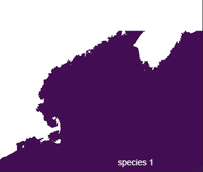
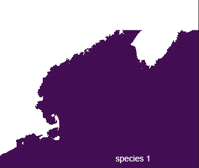
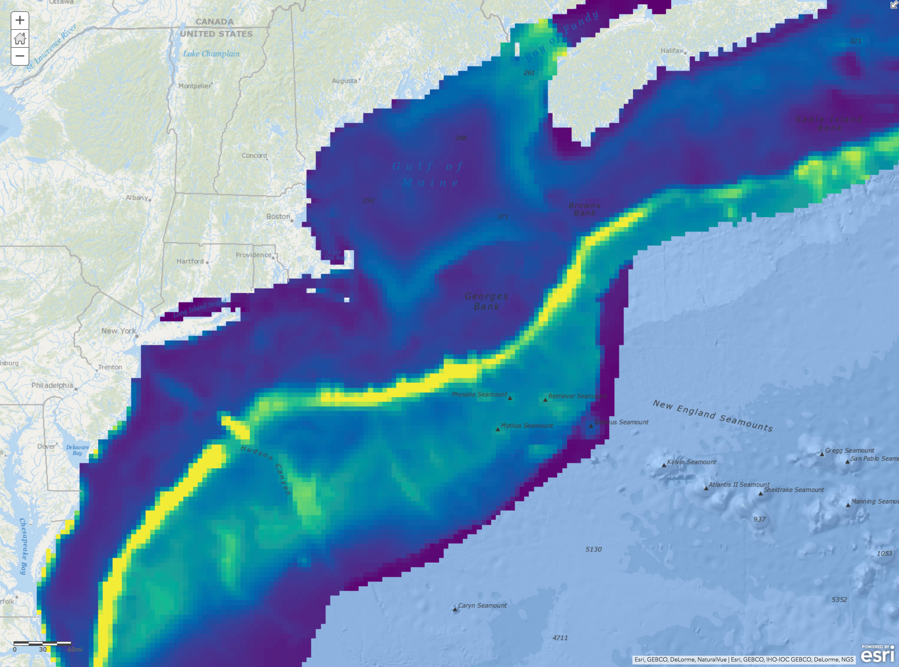
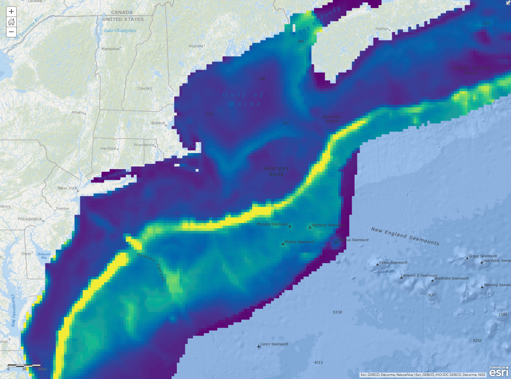
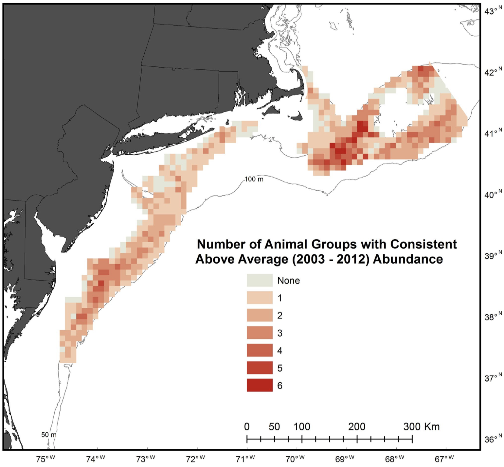

Abundance
Why abundance?
Abundance is important for ocean planning because areas where many organisms are present are places where:
Any interactions with human uses could affect high numbers of individuals;
Organisms could be feeding/foraging, breeding/spawning, rearing young, resting, migrating, or any other function important to the life-history of the species;
Biological productivity may be generally high and habitat may be complex
How is abundance mapped?
Total abundance maps are developed by simple addition. Abundance maps for each individual species in a group are stacked and added. Each pixel in the resulting map represents the sum of all individuals of all species present there during that time period.
 

Why are there so many abundance layers?
Abundnance is dynamic. The species using an area change due to the patchy distribution of resources in the 3-dimensional ocean environment (Levin and Whitfield 1994, Carr et al. 2003, Lourie and Vincent 2004, Briscoe et al. 2016). Data products were developed for the smallest time windows possible (e.g., months, seasons) to capture this variability. Data products were also developed for groups of species with similar ecology, because they may be aggregating in locations for similar reasons.
 

Compare maps of monthly cetacean abundance (left, animated) with a map of total annual abundance averaged across all months (right).
DIG DEEPER
Abundance is linked to other ecological factors
Static and dynamic features and processes like the shelf break, seamounts, sea surface temperature fronts, eddies, and upwelling areas are mappable and somewhat predictable. These geological and biophysical features and processes can generate locally high productivity and thus attract large numbers of organisms to certain places during certain times of year (Briscoe et al. 2016 and references therein, Santora et al. 2017, Mannocci et al. 2017), including humans (Watson et al. 2018, Brigolin et al. 2018). See HABITAT AND OCEANGRAPHIC DRIVERS and PRODUCTIVITY.


For example, compare the distribution patterns of red hake biomass (1970-2014) in fall (left) with patterns in sea surface temperature front probability (2002-2013) in fall (right).
Abundance is represented a few different ways
Total (annual) abundance
MDAT summary products were generated with annual mean abundance layers for each species in a group. For annual total abundance, all of the seasonal or monthly models for each species are averaged first. These annual averages are then stacked and summed. Averaging in this way can make it difficult to perceive peaks in abundance at certain times of year.
Monthly and seasonal abundance
Based on feedback from experts and stakeholders, MDAT developed layers representing species group abundance for the finest time windows possible. These layers can be viewed as animations, to show how abundance patterns may change throughout the year.
Number of benthic megafauanl groups with above average abundance
Besides cetaceans, birds, and fish, there is information about benthic megafaunal abundance from surveys conducted by the University of Massachusetts School of Marine Science and Technology (SMAST).
Based on data from their scallop video survey from 2003-2012, they mapped areas with consistent above average abundance of benthic megafaunal groups (sea stars, scallops, hermit crabs, skates, red hake, moon snails, crabs, flatfishes).
 
The resulting map (left) summarizes abundance patterns over almost a whole decade, but maps showing abundance patterns changing year-to-year for individual species are also linked to on the Northeast Ocean Data Portal biological habitat map (also shown right).
References
Brigolin D, Girardi P, Miller PI, Xu W, Nachite D, Zucchetta M, Pranovi F. 2018. Using remote sensing indicators to investigate the association of landings with fronts: Application to the Alboran Sea (western Mediterranean Sea). Fisheries Oceanography (early view). doi:10.1111/fog.12262.
Briscoe DK, Maxwell SM, Kudela R, Crowder LB, Croll D. 2016. Are we missing important areas in pelagic marine conservation? Redefining conservation hotspots in the ocean. Endangered Species Research 29: 229-237. doi:10.3354/esr00710.
Carr M, Neigel J, Estes J, Andelman S, Warner R, Largier J. 2003. Comparing marine and terrestrial ecosystems: implications for the design of coastal marine reserves. Ecological Applications 13: 90−107. doi:10.1890/1051-0761(2003)013[0090:CMATEI]2.0.CO;2.
Levin SA, Whitfield M. 1994. Patchiness in marine and terrestrial systems: from individuals to populations. Philosophical Transactions of the Royal Society B 343: 99−103. doi:10.1098/rstb.1994.0013.
Lourie S, Vincent A. 2004. Using biogeography to help set priorities in marine conservation. Conservation Biology 18: 1004−1020. doi:10.1111/j.1523-1739.2004.00137.x.
Mannocci L, Boustany AM, Roberts JJ, Palacios DM, Dunn DC, Halpin PN, Viehman S, Moxley J, Cleary J, Bailey H, Bograd SJ, Becker EA, Gardner B, Hartog JR, Hazen EL, Ferguson MC, Forney KA, Kinlan BP, Oliver MJ, Perretti CT, Ridoux V, Teo SLH, Winship A. Temporal resolutions in species distribution models of highly mobile marine animals: Recommendations for ecologists and managers. Diversity and Distributions 23: 1098-1109. doi:10.1111/ddi.12609.
Santora JA, Syderman WJ, Schroeder ID, Field JC, Miller RR, Wells BK. 2017. Persistence of trophic hotspots and relation to human impacts within an upwelling marine ecosystem. Ecological Applications 27(2): 560-574. doi:10.1002/eap.1466.
Watson JR, Fuller EC, Castruccio FS, Samhouri JF. 2018. Fishermen follow fine-scale physical ocean features for finance. Frontiers in Marine Science 5:46. doi:10.3389/fmars.2018.00046.
WHAT YOU NEED TO KNOW
Abundance is dynamic, and the patterns in abundance maps can be driven by one or a few species. Species group and taxa abundance maps should always be used as a starting point for more in-depth analyses of individual species and higher temporal resolutions.
Total abundance maps show where all individuals of a species group or whole taxon are distributed on average over a given time period.
Species abundance patterns change throughout the year.
Because of differences in species sampling and mapping methods, we do not represent the same time windows for all species. Cetaceans are characterized monthly, birds are characterized seaonally, and fish are represented by their fall biomass only.
For seasonal and monthly species group abundance products, the composition of species groups may change due to data availability. Consult the data product documentation to understand what species are being represented in a map.